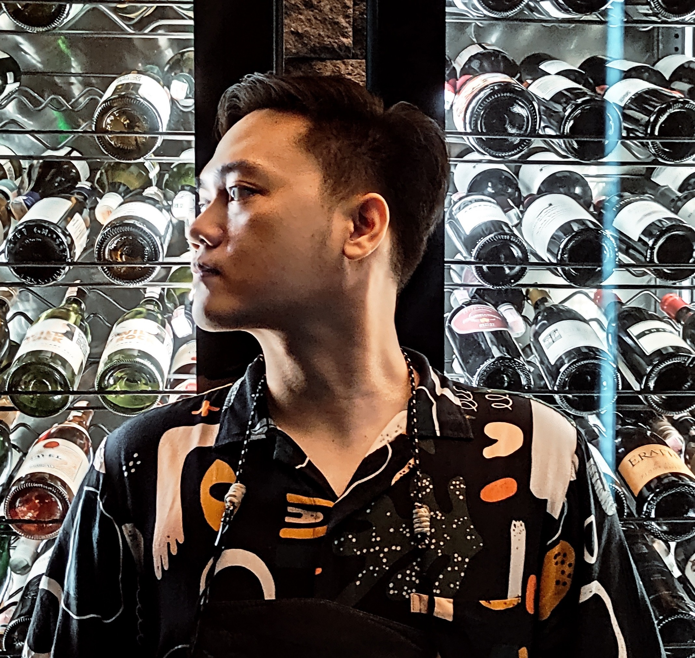

This is the simple introduction or description about me.

My name is Ari Johand but im rebranding my name to Johand. i was once a marketing for 5 years
& i feel bored at my job because theres no challenge anymore so i decided to switch career to be programmer. so im joining the
zettacamp program in jogja, leaving marketing life behind to pursue in new career
My favorite quote is:
"Fake it till you made it." -Unknown
I also have some ride before that. Heres my bike list
If youre interested to know me better, you can click HERE to visit my linkedin profile. Or just click on the image below:
I guess thats all the information about me that you can know. For closing, here's a video of a clingy cat with oblique mustache i found near my living place in Jogja. Take all your time to admire it.